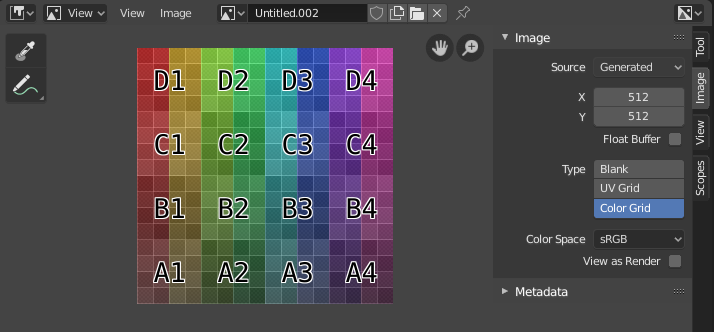

Introduction¶
The Image Editor is where you can view/edit 2D assets like images or textures.

Image Editor with a test grid texture.
Toolbar¶
- Sample Tool
Used to sample a pixels color from anywhere within Blender.
- Sample Size
- The dimensions of the square used to sample underlying pixels. If larger than 1 the resulting sample is an average of all underlying pixels.
- Annotate
- See Annotations for more information.
Header¶
- View
- Tools for controlling how the content is displayed in the editor. See Navigating.
- Image
Data-block menu used for selecting images. When an image has been loaded or created in the Image editor, the Image panel appears in the Sidebar region. See Image Settings.
- Render Result
- Viewer Node
- Modes
- View
- Displays Images.
- Paint
- Texture Paint.
- Mask
- Masking.
Multi-Layer¶
When a rendered image is displayed in the Image Editor, several new menu items become available.
- Slot
- You can save successive renders into the render buffer by selecting a new slot before rendering. If an image has been rendered to a slot, it can be viewed by selecting that slot. Empty slots appear as blank grids in the Image editor. Use the J and Alt-J to cycle forwards and backwards through saved renders. The Slot Name field in the Display Panel allows you to rename a slot.
- View Layer
- If you are using View Layers, use this menu to select which layer is displayed.
- Render Pass
- If you are using Render Passes, use this menu to select which pass is displayed.
Display Channels¶
In the dropdown menu on the right, the displayed channels can be selected.
- Color and Alpha
- Replaces transparent pixels with background checkerboard, denoting the alpha channel.
- Color
- Display the colored image, without alpha channel.
- Alpha
- Displays the Alpha channel a grayscale image. White areas are opaque, black areas have an alpha of 0.
- Z-Buffer
- Display the depth from the camera, from Clip Start to Clip End, as specified in the Camera settings.
- Red, Green, Blue
- Single Color Channel visualized as a grayscale image.
Main View¶
When LMB / RMB dragging mouse the color under the cursor is shown in the footer as well the cursor position and the color values in the RGBA, HSV and Luminance color space.
Sidebar Region¶
- Tool
- Displays the settings of the active tool.
- Image
- Tools for working with images see Image Settings.
- View Tab
- Controls display options see View Tab.